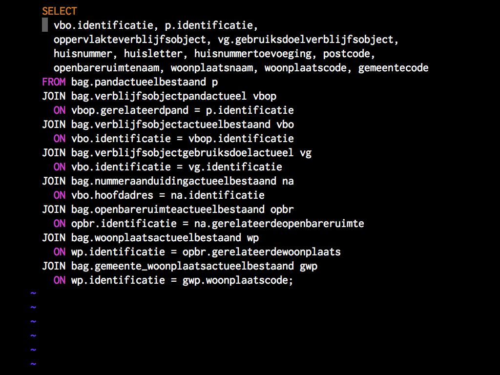
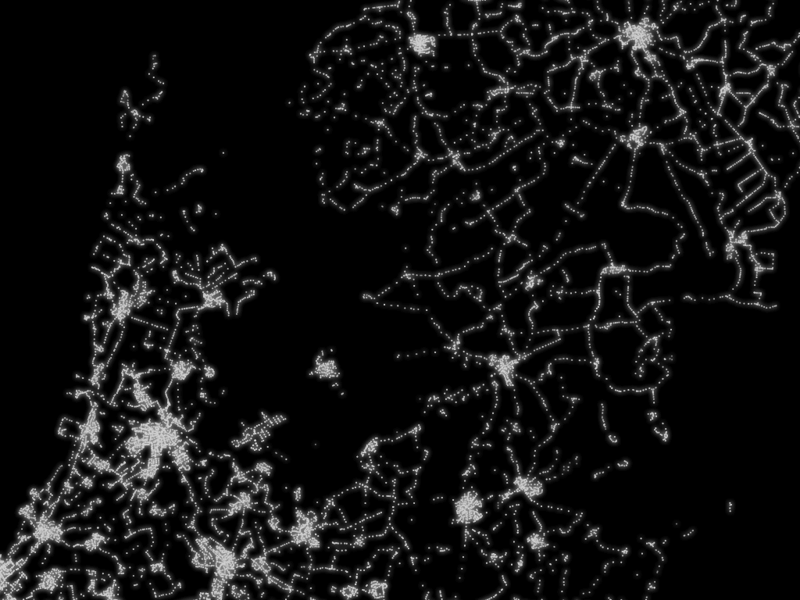
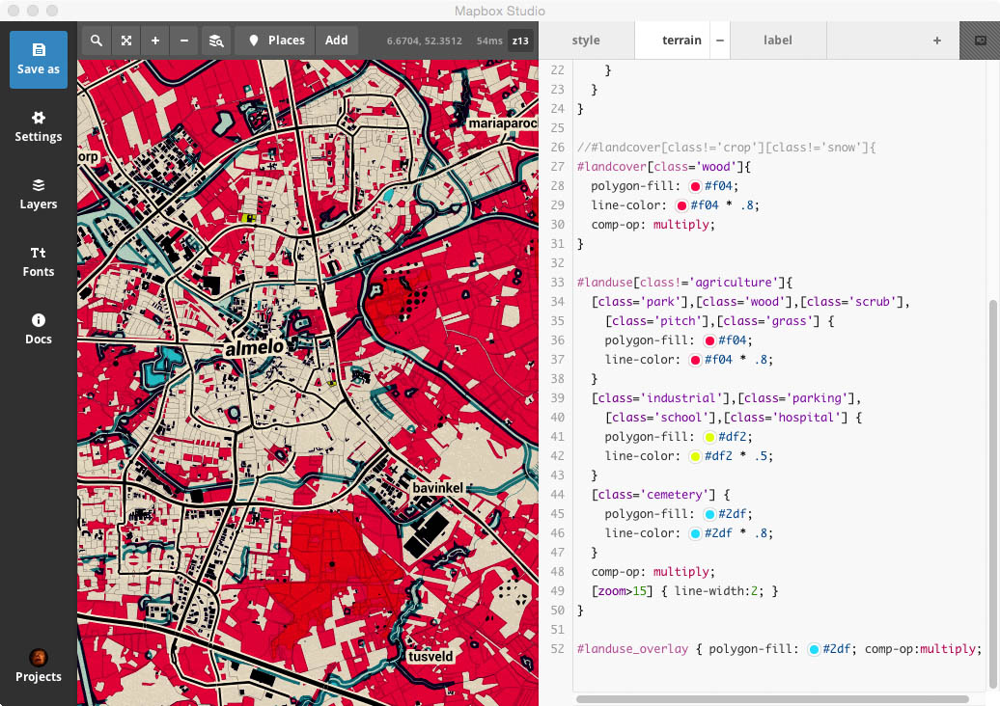
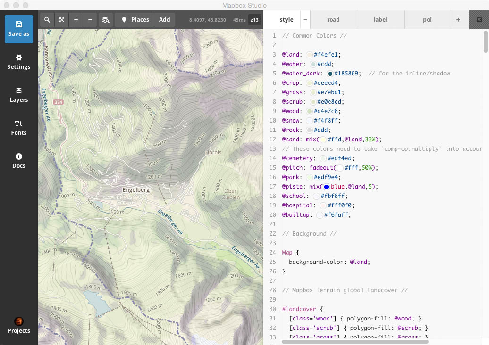
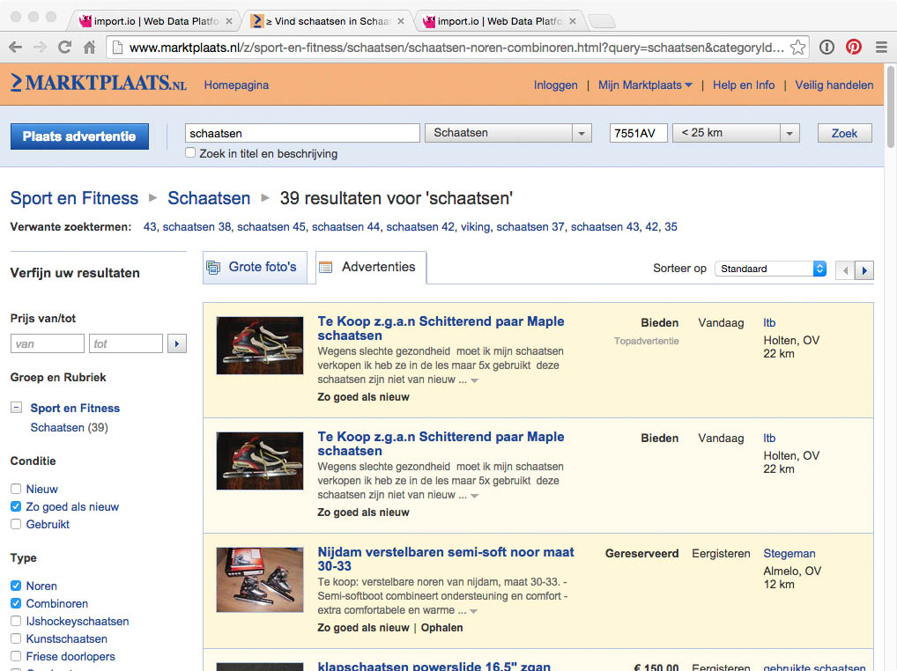

Data!

Waag Society

Fablab Amsterdam
Fabschool
Fairphone
Big data, open data
Google: big data
Google: big data
Wat is Open Data?

Open data - Picnic

Open data - Picnic
Open data - Picnic

Open data - Picnic

Open data - Picnic
Open data - Picnic

Data portal

Different silos
● not linked
Different file formats
404 - not found
Different data models & field names

Different data models & field names
Amsterdam Central Station

Wikipedia

DBpedia

OpenStreetMap

Cultural Heritage Site

GVB
Data uit verschillende bronnen, in verschillende formaten
Veel data nog niet open...
Kadaster ● Kamer van Koophandel ● Openbaar vervoer
| ★ | Data online, open licentie |
| ★★ | Gestructureerde data |
| ★★★ | Open formaat |
| ★★★★ | URI's ter identificatie |
| ★★★★★ | Links met andere data |

LOD cloud
Dienstregelingen, OpenStreetMap, Wegenbestand, BAG
Parkeerdata, KNMI, CBS, DUO, RCE, etc.
Open data vaak geo-data!
Geo-data
Open data-projecten Waag Society
CitySDK

CitySDK

CitySDK

SmartCitizenKit

SmartCitizenKit - Website

SmartCitizenKit - CitySDK LD API

Haarlem
Westland

Staphorst
Scholen & OpenTripPlanner: laten zien!

Scott Kildall
Zelf aan de slag!
Open source! GitHub!
ArcGIS
Mapbox Studio

GitHub
Mapbox Studio
OpenRefine
R

D3js
D3js
Leaflet

geojson.io
OpenStreetMap

OpenStreetMap

OpenStreetMap

import.io
import.io
import.io
Prijsvraag!
Wat? Waar? Dataset?
Vraag 1!
Prijsvraag 1
Vraag 2!
Prijsvraag 2
Vraag 3!
Prijsvraag 3
Vraag 4!
Prijsvraag 4
Vraag 5!
Prijsvraag 5
Vraag 6!

Prijsvraag 6
Vraag 7!
Prijsvraag 7
Winnaar!